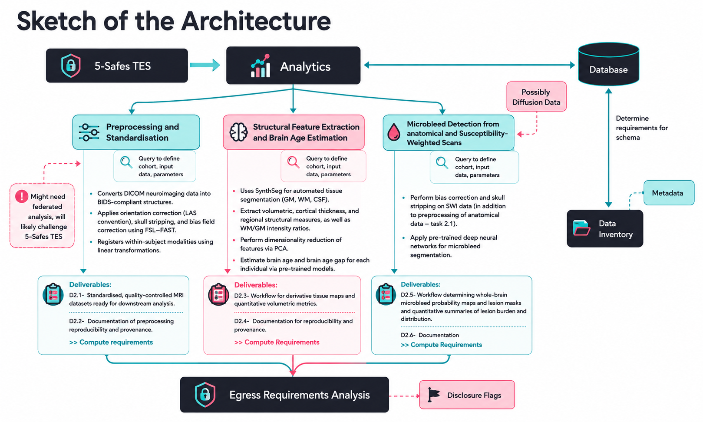

Developer resources, technical guides, and relevant links for the BRAID federated analytics infrastructure.
BRAID deploys analytical workflows as containerised 5-Safes Task Execution Services (5Safes-TES) requests within the three-layer TREvolution architecture (submission layer, execution layer, egress). Below is a sketch of our initial architecture, which is still under construction:

Open-source code for BRAID pipelines, containerised workflows, and configuration scripts.
Official BRAID project page on the DARE UK website, including programme context and updates.
The data standard adopted by BRAID for organising neuroimaging inputs and derivative outputs across TREs.
The neuroimaging toolbox developed by Sotiropoulos and colleagues, underpinning BRAID's multi-modal MRI processing pipelines.
The neuroimaging processing pipeline co-authored by Sotiropoulos that BRAID adapts for TRE-federated deployment.
Standards, patterns, and software infrastructure for secure federated research across multiple trusted research environments.
DARE UK TREvolution infrastructure documentation — the federated TRE technology stack underpinning BRAID.
5-Safes TES specification — the interoperability standard used by TREvolution for submitting analysis tasks to TREs.
All TRE operations follow the Five Safes: safe people, safe projects, safe settings, safe data, and safe outputs.
All datasets and workflows are Findable, Accessible, Interoperable, and Reusable. BIDS format is used for all neuroimaging data.
DPUK operates under ISO-27001 certification. University of Nottingham holds Cyber Essentials Plus certification.
All activities comply with UK General Data Protection Regulation and the Data Protection Act 2018.